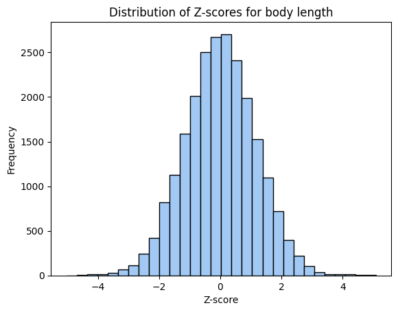

Calculate associations between predicted gene expression in adipose tissue and BMI to identify significant gene, while I figure out high to scale up predicting epigenome step.
import pandas as pdimport numpy as npimport tensorflow as tfimport h5pyimport osimport timeimport bisectcolumns = ['ACI', 'BN', 'BUF', 'F344', 'M520', 'MR', 'WKY', 'WN']
2025-08-17 21:10:06.646981: I tensorflow/core/platform/cpu_feature_guard.cc:193] This TensorFlow binary is optimized with oneAPI Deep Neural Network Library (oneDNN) to use the following CPU instructions in performance-critical operations: AVX2 FMA
To enable them in other operations, rebuild TensorFlow with the appropriate compiler flags.
2025-08-17 21:10:09.958339: W tensorflow/compiler/xla/stream_executor/platform/default/dso_loader.cc:64] Could not load dynamic library 'libcudart.so.11.0'; dlerror: libcudart.so.11.0: cannot open shared object file: No such file or directory; LD_LIBRARY_PATH: /soft/perftools/darshan/darshan-3.4.4/lib:/opt/cray/pe/papi/7.0.1.2/lib64:/opt/cray/libfabric/1.15.2.0/lib64:/opt/nvidia/hpc_sdk/Linux_x86_64/23.9/comm_libs/nvshmem/lib:/opt/nvidia/hpc_sdk/Linux_x86_64/23.9/comm_libs/nccl/lib:/opt/nvidia/hpc_sdk/Linux_x86_64/23.9/math_libs/lib64:/opt/nvidia/hpc_sdk/Linux_x86_64/23.9/compilers/lib:/opt/nvidia/hpc_sdk/Linux_x86_64/23.9/compilers/extras/qd/lib:/opt/nvidia/hpc_sdk/Linux_x86_64/23.9/cuda/extras/CUPTI/lib64:/opt/nvidia/hpc_sdk/Linux_x86_64/23.9/cuda/lib64:/dbhome/db2cat/sqllib/lib64:/dbhome/db2cat/sqllib/lib64/gskit:/dbhome/db2cat/sqllib/lib32
2025-08-17 21:10:09.958723: I tensorflow/compiler/xla/stream_executor/cuda/cudart_stub.cc:29] Ignore above cudart dlerror if you do not have a GPU set up on your machine.
2025-08-17 21:10:14.050496: W tensorflow/compiler/xla/stream_executor/platform/default/dso_loader.cc:64] Could not load dynamic library 'libnvinfer.so.7'; dlerror: libnvinfer.so.7: cannot open shared object file: No such file or directory; LD_LIBRARY_PATH: /soft/perftools/darshan/darshan-3.4.4/lib:/opt/cray/pe/papi/7.0.1.2/lib64:/opt/cray/libfabric/1.15.2.0/lib64:/opt/nvidia/hpc_sdk/Linux_x86_64/23.9/comm_libs/nvshmem/lib:/opt/nvidia/hpc_sdk/Linux_x86_64/23.9/comm_libs/nccl/lib:/opt/nvidia/hpc_sdk/Linux_x86_64/23.9/math_libs/lib64:/opt/nvidia/hpc_sdk/Linux_x86_64/23.9/compilers/lib:/opt/nvidia/hpc_sdk/Linux_x86_64/23.9/compilers/extras/qd/lib:/opt/nvidia/hpc_sdk/Linux_x86_64/23.9/cuda/extras/CUPTI/lib64:/opt/nvidia/hpc_sdk/Linux_x86_64/23.9/cuda/lib64:/dbhome/db2cat/sqllib/lib64:/dbhome/db2cat/sqllib/lib64/gskit:/dbhome/db2cat/sqllib/lib32
2025-08-17 21:10:14.051982: W tensorflow/compiler/xla/stream_executor/platform/default/dso_loader.cc:64] Could not load dynamic library 'libnvinfer_plugin.so.7'; dlerror: libnvinfer_plugin.so.7: cannot open shared object file: No such file or directory; LD_LIBRARY_PATH: /soft/perftools/darshan/darshan-3.4.4/lib:/opt/cray/pe/papi/7.0.1.2/lib64:/opt/cray/libfabric/1.15.2.0/lib64:/opt/nvidia/hpc_sdk/Linux_x86_64/23.9/comm_libs/nvshmem/lib:/opt/nvidia/hpc_sdk/Linux_x86_64/23.9/comm_libs/nccl/lib:/opt/nvidia/hpc_sdk/Linux_x86_64/23.9/math_libs/lib64:/opt/nvidia/hpc_sdk/Linux_x86_64/23.9/compilers/lib:/opt/nvidia/hpc_sdk/Linux_x86_64/23.9/compilers/extras/qd/lib:/opt/nvidia/hpc_sdk/Linux_x86_64/23.9/cuda/extras/CUPTI/lib64:/opt/nvidia/hpc_sdk/Linux_x86_64/23.9/cuda/lib64:/dbhome/db2cat/sqllib/lib64:/dbhome/db2cat/sqllib/lib64/gskit:/dbhome/db2cat/sqllib/lib32
2025-08-17 21:10:14.052008: W tensorflow/compiler/tf2tensorrt/utils/py_utils.cc:38] TF-TRT Warning: Cannot dlopen some TensorRT libraries. If you would like to use Nvidia GPU with TensorRT, please make sure the missing libraries mentioned above are installed properly.
Realizing my haplotype probabilities storage is redundant, taking up extra space.
Code
probabilities_file =f'{probabilities_dir}/chr20_probabilities.h5'with h5py.File(probabilities_file, 'a') as hf:for dataset_name inlist(hf.keys()):if hf[dataset_name].shape[1] ==8:continueelif hf[dataset_name].shape[1] ==9:# Read the dataset data = hf[dataset_name][:] positions = data[:, 0] # Assuming the positions column is the first column new_data = data[:, 1:] # All columns except the first one# Create a temporary dataset without the positions column temp_dataset_name =f"temp_{dataset_name}" hf.create_dataset(temp_dataset_name, data=new_data)# Delete the original datasetdel hf[dataset_name]# Rename the temporary dataset to the original dataset name hf.move(temp_dataset_name, dataset_name) hf.create_dataset('positions', data=positions)# Store the positions vector as metadata (attribute) for the dataset
split genes by chromosome number for individual, query haplotype probabilities at each gene tss, so we return an 8 x n_gene matrix. by batching by genes n_genes should be in the 1-2K range. stack to return a 3d array with dimensions n_samples x 8 x n_gene next query reference epigenome at each gene [446:450, CAGE_index], return 8 x n_gene matrix matrix multiply with something like tf.transpose(tf.tensordot(_W, _X, axes=[[1],[1]]),[1,0,2]) https://stackoverflow.com/questions/41870228/understanding-tensordot
/tmp/ipykernel_2837064/4138209945.py:1: DtypeWarning: Columns (0) have mixed types. Specify dtype option on import or set low_memory=False.
all_pheno = pd.read_csv("/home/s1mi/enformer_rat_data/phenotypes/ALLTRAITSALLNORMALIZES_19jul24.csv",
pred_expr = pd.read_csv(f'{output_dir}/Br_all_genes_by_tissue/Br_CAGE_brain__predict.txt', index_col=0)samples = pred_expr.index.intersection(pheno_samples)print(f'{len(samples)} samples in association test')
324 samples in association test
We write new predicted expression and phenotype files with the same order of individuals.
plt.hist(bodylen_assoc['zscore'], bins=30, edgecolor='black', color=colors[0])plt.title('Distribution of Z-scores for body length')plt.xlabel('Z-score')plt.ylabel('Frequency')plt.show()

plt.hist(bodylen_assoc['pvalue'], bins=30, edgecolor='black', color=colors[0])plt.title('Distribution of P-values for body length')plt.xlabel('P-value')plt.ylabel('Frequency')plt.show()
threshold_FE =0.5/len(bodylen_assoc)# Filter significant genesbodylen_genes_FE = bodylen_assoc.loc[bodylen_assoc['pvalue'] < threshold_FE, 'gene']print(f'{len(bodylen_genes_FE)} of {len(bodylen_assoc)} genes are Bonferroni significant using the Fast Enformer method.')threshold_ratxcan =0.5/len(bodylen_results)bodylen_genes_ratxcan = bodylen_results.loc[bodylen_results['p_acat_5'] < threshold_ratxcan, 'gene']print(f'{len(bodylen_genes_ratxcan)} of {len(bodylen_results)} genes are Bonferroni significant using RatXcan.')
19 of 22876 genes are Bonferroni significant using the Fast Enformer method.
16 of 10933 genes are Bonferroni significant using RatXcan.
Unfortunately, the lists of genes found significant using Fast Enformer and RatXcan do not overlap.
plt.hist(bmi_assoc['zscore'], bins=30, edgecolor='black', color=colors[0])plt.title('Distribution of Z-scores for BMI')plt.xlabel('Z-score')plt.ylabel('Frequency')plt.show()
plt.hist(bmi_assoc['pvalue'], bins=30, edgecolor='black', color=colors[0])plt.title('Distribution of P-values for BMI')plt.xlabel('P-value')plt.ylabel('Frequency')plt.show()
threshold_FE =0.5/len(bmi_assoc)# Filter significant genesbmi_genes_FE = bmi_assoc.loc[bmi_assoc['pvalue'] < threshold_FE, 'gene']print(f'{len(bmi_genes_FE)} of {len(bmi_assoc)} genes are Bonferroni significant using the Fast Enformer method.')threshold_ratxcan =0.5/len(bmi_results)bmi_genes_ratxcan = bmi_results.loc[bmi_results['p_acat_5'] < threshold_ratxcan, 'gene']print(f'{len(bmi_genes_ratxcan)} of {len(bmi_results)} genes are Bonferroni significant using RatXcan.')
0 of 22876 genes are Bonferroni significant using the Fast Enformer method.
16 of 10933 genes are Bonferroni significant using RatXcan.